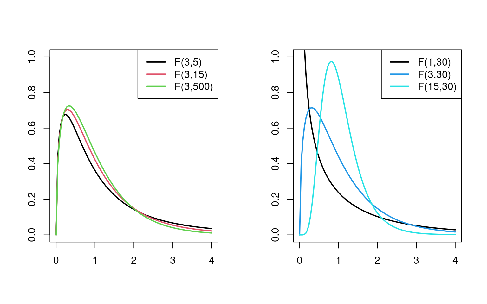
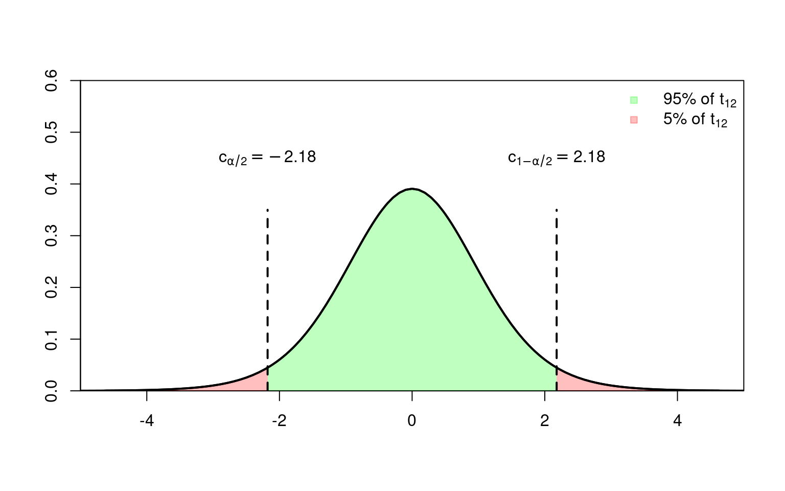

5 Small Sample Inference
The content of this chapter is very much inspired by Chapter 1 of Hayashi (2000).
It’s is very hard to say when a sample size \(n\) is small. Often people say something like:
- \(n<30\) means small samples and \(n\geq 30\) large samples, or
- \(n/K<10\) means small samples and \(n/K\geq 10\) large samples,
but these are only a very rough rules of thumb and may not apply in practice.
The core issue with small sample sizes is that we cannot do inference using the law of large numbers and the central limit theorem. Thus we need rather strict assumptions on the distribution of the error term, in order to do inference in finite samples. If these assumption are fulfilled, however, then we do exact inference.
Exact inference: By “exact inference” we mean correct inference for each sample size \(n\). That is, no asymptotic \((n\to\infty)\) arguments will be used.
Assumptions: Recall that we, in general, did not impose a complete distributional assumption on \(\varepsilon\) in Assumption 4 (Chapter 4). For instance, the i.i.d. normal case in Assumption 4 was only one possible option. However, to do exact inference, the normality Assumption on the error terms is not a mere option, but a necessity.
For this chapter we assume that Assumptions 1-3 from Chapter 4 hold and that additionally the following assumption holds:
Assumption 4\(^\boldsymbol{\ast}\): Conditional Gaussian error distribution: The error terms are Gaussian and homoskedastik, i.e., \[ \varepsilon_i|X_i\sim\mathcal{N}(0,\sigma^2) \] for all \(i=1,\dots,n.\)
Assumption 4\(^\boldsymbol{\ast}\) together with the random sample assumption of Assumption 1, part (b), leads to Gaussian spherical errors conditionally on \(X\), \[ \varepsilon|X\sim\mathcal{N}\left(0,\sigma^2I_n\right), \] where \(\varepsilon=(\varepsilon_1,\dots,\varepsilon_n)'\).
Proof. This result follows from noting that \[\begin{align*} \hat\beta_n &=(X'X)^{-1}X'Y\\[2ex] &=\beta+(X'X)^{-1}X'\varepsilon \end{align*}\] and because \((X'X)^{-1}X'\varepsilon\) is just a linear combination of the normally distributed error terms \(\varepsilon\) which, therefore, is again normally distributed, conditionally on \(X\). Note that the specific normal distribution depends on the observed realization of \(X\).
Remark: The subscript \(n\) in \(\hat\beta_n\) is here only to emphasize that the distribution of \(\hat\beta_n\) depends on \(n\); we will, however, often simply write \(\hat\beta\).
5.1 Hypothesis Tests about Multiple Parameters (F-Tests)
Let us consider the following system of \(q\)-many null hypotheses: \[\begin{align*} H_0: \underset{(q\times K)}{R}\underset{(K\times 1)}{\beta} - \underset{(q\times 1)}{r} = \underset{(q\times 1)}{0}, \end{align*}\] where the \((q \times K)\) matrix \(R\) and the \(q\)-vector \(r=(r_{1},\dots,r_{q})'\) are chosen by the statistician to specify her/his null hypothesis about the unknown true parameter vector \(\beta\). To make sure that there are no redundant equations, it is required that \(\operatorname{rank}(R)=q\).
We must also specify the alternative against which we are testing the null hypothesis, for instance \[\begin{equation*} H_1: R\beta -r \neq 0 \end{equation*}\]
The above multiple parameter hypotheses cover also the special case of single parameter hypothesis; for instance, by setting \(R=(0,1,0\dots,0)\) and \(r=0\) one get’s \[\begin{equation*} \begin{array}{ll} H_0: & \beta_{k}=0 \\ H_1: & \beta_{k} \ne 0 \\ \end{array} \end{equation*}\]
Under our assumptions (Assumptions 1 to 4\(^\ast\)), we have that \[ \begin{align*} (R\hat\beta_n-r)|X&\sim\mathcal{N}\left(R\beta -r,RVar(\hat\beta_n|X)R'\right)\\ (R\hat\beta_n-r)|X&\overset{H_0}{\sim}\mathcal{N}\left(0,RVar(\hat\beta_n|X)R'\right) \end{align*} \]
That is,
- the realizations of \((R\hat\beta_n -r)|X\) will scatter around the unknown \((R\beta -r)\) in a Gaussian fashion.
- if the null hypothesis is correct (i.e., \((R\beta-r)=0\)), the realizations of \((R\hat\beta_n-r)|X\) scatter around the \((q\times 1)\) vector \(0\).
We use a test statistic to detect a systematic location shift away from the zero vector.
5.1.1 The Test Statistic and its Null Distribution
The fact that \((R\hat\beta_n-r)\in\mathbb{R}^q\) is a \(q\)-dimensional random variable makes it a little bothersome to use as a test-statistic. Fortunately, we can turn \((R\hat\beta_n-r)\) into a scalar-valued test statistic using the following quadratic form: \[ W=\underbrace{(R\hat\beta_n -r)'}_{(1\times q)}\underbrace{[RVar(\hat\beta_n|X)R']^{-1}}_{(q\times q)}\underbrace{(R\hat\beta_n -r)}_{(q\times 1)} \] Note that the test statistic \(W\) is simply measuring the distance (it’s a weighted L2-distance) between the \((q\times 1)\) vectors \(R\hat\beta_n\) and \(r\).
Under the null hypothesis (i.e., if \(H_0\) is true), \(W|X\) is a sum of \(q\)-many independent squared standard normal random variables. Therefore, under the null hypothesis, \(W|X\) is chi-square distributed with \(q\) degrees of freedom (see Section 2.2.10.3), \[ \begin{align*} W|X&\overset{H_0}{\sim} \chi^2_{(q)}\\ \Rightarrow \quad\quad W&\overset{H_0}{\sim} \chi^2_{(q)} \end{align*} \] Note that the distribution of \(W|X\) does not depend on \(X,\) (i.e. it’s a \(\chi^2_{(q)}\)-distribution no matter the realization of \(X\)) and thus our test decisions do not depend on the values of \(X.\) (Good news!)
Usually, we do not know \(Var(\hat\beta_n|X),\) and thus we need to estimate this quantity from the data. Unfortunately, in the small sample case, we can only deal with homoskedastic error terms. For truly exact finite sample inference, we need a variance estimator for which we can derive the exact small sample distribution. Therefore, we require Assumption 4\(^*\) of spherical errors (i.e., \(Var(\varepsilon|X)=I_n\sigma^2\)) which yields that \(Var(\hat\beta_n|X)=\sigma^2(X'X)^{-1}\), and where \(\sigma^2\) can be estimated by the unbiased (\(UB\)) variance estimator
\[
s_{UB}^2=(n-K)^{-1}\sum_{i=1}^n\hat\varepsilon_i^2.
\]
From the normality assumption in Assumption 4\(^*\), it follows then that \[
\frac{(n-K)}{\sigma^{2}}s_{UB}^2\sim\chi^2_{(n-K)}.
\tag{5.2}\]
The \(F\) test statistic uses then \(s_{UB}^2\) as an estimator of \(\sigma^2\) \[ F=(R\hat\beta_n -r)'[R(s_{UB}^2(X'X)^{-1})R']^{-1}(R\hat\beta_n -r)/q \] and takes into account the additional randomness (estimation errors) due to \(s_{UB}^2\), which leads to the following exact null distribution of the \(F\) test \[ F\overset{H_0}{\sim} F_{(q,n-K)}, \tag{5.3}\] where \(F_{(q,n-K)}\) denotes the \(F\)-distribution with \(q\) numerator and \(n-K\) denominator degrees of freedom.
As in the case of \(W\), the distribution of \(F\) conditional on \(X\) does not depend on \(X\); i.e. \(F|X\overset{H_0}{\sim}F_{(q,n-K)},\) but \(F_{(q,n-K)}\) does not depend on \(X,\) thus we can write \(F\overset{H_0}{\sim}F_{(q,n-K)}.\)
The distributional statements in Equation 5.2 and Equation 5.3 are a little cumbersome to derive and we do not go into details here, but in case you’re interested you can find some more details, for instance, in Chapter 1 of Hayashi (2000).
By contrast to \(W,\) \(F\) is now a practically useful test statistic, and we can use the observed value \(F_{\text{obs}}\) to measure the distance of our estimate \(R\hat\beta_n\) from its hypothetical value \(r.\)
Observed values, \(F_{\text{obs}}\), that are “unusually large” under the null hypothesis, lead to a rejection of the null hypothesis. The null distribution \(F_{(q,n-K)}\) of \(F\) is used to judge what’s “unusually large” under the null hypothesis.
The F distribution. The F distribution is a ratio of two \(\chi^2\) distributions. It has two parameters: the numerator degrees of freedom, and the denominator degrees of freedom. Each combination of the parameters yields a different F distribution. See Section 2.2.10.6 for more information on the \(F\) distribution.
5.2 Tests about One Parameter (t-Tests)
A hypothesis about only one parameter \[\begin{equation*} \begin{array}{ll} H_0: & \beta_k=\beta_k^{(0)}\\ \text{versus}\quad H_1: & \beta_k\ne \beta_k^{(0)}\\ \end{array} \end{equation*}\] is simply a special case of the general null hypothesis \(H_0:R\beta -r =0,\) where \(R\) is a \((1\times K)\) row-vector of zeros, but with a one as the \(k\)th element, and where the null hypothetical value is set by the statistician \(r=\beta_k^{(0)}\) (e.g. \(\beta_k^{(0)}=0\)).
Thus the \(F\)-test statistic simplifies to \[ F=\frac{\left(\hat{\beta}_k-\beta_k^{(0)}\right)^2}{\widehat{Var}(\hat{\beta}_k|X)}\overset{H_0}{\sim}F_{(1,n-K)}, \] where \[\widehat{Var}(\hat{\beta}_k|X)=s^2_{UB}[(X'X)^{-1}]_{kk}. \] Taking square roots yields the \(t\) test statistic \[ T=\frac{\hat{\beta}_k-\beta_k^{(0)}}{\widehat{\operatorname{SE}}(\hat{\beta}_k|X)}\overset{H_0}{\sim}t_{(n-K)}, \] where \[ \widehat{\operatorname{SE}}(\hat{\beta}_k|X)=s_{UB}[(X'X)^{-1/2}]_{kk}, \] and where \(t_{(n-K)}\) denotes the \(t\)-distribution with \(n-K\) degrees of freedom.
Thus the \(t\)-distribution with \(n-K\) degrees of freedom is the appropriate distribution to judge whether or not an observed value \(T_{\text{obs}}\) of the test statistic is “unusually large” under the null hypothesis.
Tip
All commonly used statistical software packages report \(t\)-tests testing the null hypothesis \[ H_0:\beta_k=0 \] for each \(k=1,\dots,K.\) This means to test the null hypothesis that \(X_k\) has “no (linear) effect” on the conditional mean of \(Y\) given \(X.\)
The \(t\) distribution. The following plot illustrates that as the degrees of freedom increase, the shape of the \(t\) distribution comes closer to that of a standard normal bell curve. Already for \(25\) degrees of freedom we find little difference to the standard normal density. In case of small degrees of freedom values, we find the distribution to have heavier tails than a standard normal. See Section 2.2.10.4 for more information about the \(t\)-distribution.

5.3 Testtheory
Every statistical test statistic is a function of the random sample, i.e. \[ T\equiv T((X_1,Y_1),\dots,(X_n,Y_n)) \] and is thus a random variable.
The observed value \[ T_{\text{obs}}\equiv T((X_{1,obs},Y_{1,obs}),\dots,(X_{n,obs},Y_{n,obs})) \] is used to decide whether we can reject the null hypothesis \(H_0\) or not.
If \[ T_{\text{obs}}\in \{\text{rejection region}\} \] we reject \(H_0.\)
If \[ T_{\text{obs}}\not\in \{\text{rejection region}\} \] we do not reject \(H_0.\)
Hereby differentiate two decision errors:
- type-I-error
- type-II-error
type-I-error and Size
We conduct a type-I-error if we reject \(H_0\) even though \(H_0\) is true, i.e. if \[ T_{\text{obs}}\in \{\text{rejection region}\} \] even though \(H_0\) is true.
The probability of a type-I-error is also called size of the test statistic \(T,\) \[\begin{align*} \text{Size}=&P(\text{type-I-error})\\[2ex] =&P(\text{reject } H_0| H_0\text{ is true})\\[2ex] =&P(T \in \{\text{rejection region}\} | H_0\text{ is true}) \end{align*}\] and we want this probability to be small.
type-II-error and Power
We conduct a type-II-error if we do not reject \(H_0\) even though \(H_1\) is true, i.e. if \[ T_{\text{obs}}\not \in \{\text{rejection region}\} \] even though \(H_1\) is true.
The probability of a type-II-error is \[\begin{align*} &P(\text{type-II-error})\\[2ex] =&P(\text{not reject } H_0| H_1\text{ is true})\\[2ex] =&P(T \not\in \{\text{rejection region}\} | H_1\text{ is true}) \end{align*}\]
One minus the probability of a type-II-error is called power: \[\begin{align*} \text{Power}=&1-P(\text{type-II-error})\\[2ex] =&1-P(\text{not reject } H_0| H_1\text{ is true})\\[2ex] =&P(\text{reject } H_0| H_1\text{ is true})\\[2ex] =&P(T\in \{\text{rejection region}\} | H_1\text{ is true}) \end{align*}\] Since we want to detect violations of \(H_0,\) we want test statistics with a large power.
5.3.1 Size and Significance Level \(\alpha\)
A statistical hypothesis test is considered a valid test if the probability of a type-I-error is bounded from above by the significance level (nominal size) \(\alpha\), i.e. if
\[\begin{align*}
\underbrace{P(\text{reject } H_0| H_0\text{ is true})}_{\text{Size of $T$}}\quad \leq \underbrace{\alpha}_{\text{Nominal Size}}
\end{align*}\]
Since we want to keep the probability of falsely rejecting \(H_0\) small, we choose small singificance levels such as
- \(\alpha=0.05\) or
- \(\alpha=0.001\)
Exact (non-conservative) vs conservative tests vs invalid
A test statistic \(T\) is called exact (or non-conservative) if \[ P(\text{type-I-error})=\alpha. \] A test statistic \(T\) is called conservative if \[ P(\text{type-I-error})<\alpha. \] A test statistic \(T\) is called invalid if \[ P(\text{type-I-error})>\alpha. \]
Tip
Under Assumption 1-4\(^\ast,\) the \(F\)-test and the \(t\)-test are exact statistical tests.
5.3.2 Critical Values
The rejection region for a statistical test statistic \(T\) is defined using critical values which are certain quantiles of the distribution of the test statistic \(T\) under the assumption that \(H_0\) is true.
The \(F\)-Test
The \(F\)-test allows us to test \[\begin{align*} &H_0: R\beta = r\\[2ex] \text{versus}\quad &H_1: R\beta\neq r, \end{align*}\] where \(\beta\) denotes the true (unknown) parameter vector and \(r\) the null-hypothetical value specified by the statistician (e.g. \(r=0\)).
We know that \[ F\overset{H_0}{\sim}F_{q,n-K}. \]
Let \(c_{1-\alpha}\) denote the \((1-\alpha)\) quantile of the \(F\)-distribution with \((q,n-K)\) degrees of freedom.
This quantile \(c_{1-\alpha}\) is the critical value that defines the rejection region: \[ \{\text{rejection region}\}=\; ]c_{1-\alpha},\infty[ \]
Thus \[\begin{align*} &P(\text{reject } H_0 | H_0\text{ is true})\\[2ex] =&P(T \in \{\text{rejection region}\} | H_0\text{ is true})\\[2ex] =&P\Big(F > c_{1-\alpha}| H_0\text{ is true}\Big)=\alpha, \end{align*}\]

The rejection region: The rejection region describes a range of values of the test statistic \(F\) which we rarely see if the null hypothesis is true (only in at most \(\alpha \cdot 100\%\) cases). If the observed value of the test statistic, \(F_{\text{obs}}\), falls in this region, we will reject the null hypothesis and accept type-I-error rate of \(\alpha\).
The non-rejection region: The non-rejection region describes a range of values of the test statistic \(F\) which we expect to see (in \((1-\alpha) \cdot 100\%\) cases) if the null hypothesis is true. If the observed value of the test statistic, \(F_{\text{obs}}\) falls in this region, we will not reject the null hypothesis.
Danger
Not rejecting the null hypothesis does not mean that we can conclude that the null hypothesis is true.
A possible violation of the null hypothesis may only be too small to stand out from the estimation errors (a type-II-error even). But we do not control the probability of such type II errors—we only control the probability of type I errors.
Therefore, never ever state something like: “I conclude \(H_0\) is true.”
To find the critical value \(c_{1-\alpha}\) we can use R as following:
df1 <- 9 # numerator df
df2 <- 120 # denominator df
alpha <- 0.05 # significance level
## Critical value:
crit_value <- qf(p = 1-alpha, df1 = df1, df2 = df2)
crit_value[1] 1.958763Changing the significance level from \(\alpha=0.05\) to \(\alpha=0.01\) makes the critical value \(c_{1-\alpha}\) larger and, therefore, the rejection region smaller (fewer Type I errors)
alpha <- 0.01
## Critical value:
crit_value <- qf(p = 1-alpha, df1 = df1, df2 = df2)
crit_value[1] 2.558574The Two-Sided \(t\)-Test
The two-sided \(t\)-test allows us to test \[\begin{align*} & H_0: \beta_k=\beta_k^{(0)}\\ \text{versus}\quad & H_1: \beta_k\ne \beta_k^{(0)} \end{align*}\] where \(\beta_k\) denotes the true (unknown) parameter value and \(\beta_k^{(0)}\) the null hypothetical value specified by the statisticaian (e.g. \(\beta_k^{(0)}=0\)).
We know that \[ T\overset{H_0}{\sim}t_{n-K}. \]
Let \(c_{\alpha/2}\) and \(c_{1-\alpha/2}\) denote the \(\alpha/2\) and the \((1-\alpha/2)\) quantiles of the \(t\)-distribution with \((n-K)\) degrees of freedom.
These quantiles are the critical values that define the rejection region of the two-sided \(t\)-test: \[ \{\text{rejection region}\}=\;]-\infty,c_{\alpha/2}[\;\;\cup\;\;]c_{1-\alpha/2}, \infty[ \]
Thus \[\begin{align*} &P(\text{reject } H_0 | H_0\text{ is true})\\[2ex] =&P(T \in \{\text{rejection region}\} | H_0\text{ is true})\\[2ex] =&P\Big(T < c_{\alpha/2}\quad\text{or}\quad T>c_{1-\alpha/2}| H_0\text{ is true}\Big)\\[2ex] =&P\Big(T < c_{\alpha/2} \; | H_0\text{ is true}\Big) + P\Big(T>c_{1-\alpha/2}| H_0\text{ is true}\Big)\\[2ex] &=\frac{\alpha}{2}+\frac{\alpha}{2}=\alpha. \end{align*}\]
Fig Figure 5.1 shows an example of the rejection region for the case of a significance level \(\alpha=0.05\) and \(n-K=12\) degrees of freedom.

To find the critical values we can use R as following:
df <- 12 # degrees of freedom
alpha <- 0.05 # significance level
## Two-sided critical value (= (1-alpha/2) quantile):
c_twoSided <- qt(p = 1-alpha/2, df = df)
## lower critical value
-c_twoSided[1] -2.178813## upper critical value
c_twoSided[1] 2.178813The One-Sided \(t\)-Test
Possible one-sided hypotheses:
\[\begin{align*} &H_0: \beta_k \leq \beta_k^{(0)}\\ \text{versus}\quad & H_1: \beta_k > \beta_k^{(0)}\\ \end{align*}\]
or
\[\begin{align*} &H_0: \beta_k \geq \beta_k^{(0)}\\ \text{versus}\quad & H_1: \beta_k < \beta_k^{(0)}\\ \end{align*}\]
We know that \[ T\overset{H_0}{\sim}t_{n-K}. \]
Let \(c_{\alpha}\) and \(c_{1-\alpha}\) denote the \(\alpha\) and the \((1-\alpha)\) quantiles of the \(t\)-distribution with \((n-K)\) degrees of freedom.
These quantiles are the critical values that define the rejection region of the one-sided \(t\)-tests:
For testing \[\begin{align*} &H_0: \beta_k \leq \beta_k^{(0)}\\ \text{versus}\quad & H_1: \beta_k > \beta_k^{(0)}\\ \end{align*}\] the rejection region is \[ \{\text{rejection region}\}=\;]c_{1-\alpha}, \infty[ \]
Fig Figure 5.2 shows an example of the rejection region for the case of a significance level \(\alpha=0.05\) and \(n-K=12\) degrees of freedom.
For testing \[\begin{align*} &H_0: \beta_k \geq \beta_k^{(0)}\\ \text{versus}\quad & H_1: \beta_k < \beta_k^{(0)}\\ \end{align*}\] the rejection region is \[ \{\text{rejection region}\}=\;]-\infty,c_{\alpha/2}[ \]
Fig Figure 5.3 shows an example of the rejection region for the case of a significance level \(\alpha=0.05\) and \(n-K=12\) degrees of freedom.
To find the critical values we can use R as following:
df <- 12 # degrees of freedom
alpha <- 0.05 # significance level
## One-sided critical value (alpha) quantile:
c_oneSided <- qt(p = alpha, df = df)
c_oneSided[1] -1.782288## One-sided critical value (1-alpha) quantile:
c_oneSided <- qt(p = 1-alpha, df = df)
c_oneSided[1] 1.7822885.3.3 Power
Since we want to detect violations of the null-hypothesis, we want that our test has a large power \[\begin{align*} \text{Power} & = 1 - P(\text{type-II-error})\\[2ex] & = 1 - P(\text{Not reject $H_0$ given $H_1$ is true})\\[2ex] & = P(\text{Reject $H_0$ given $H_1$ is true})\\[2ex] & = P(\text{Detect a violation of the null}) \end{align*}\]
Unfortunately, computing the power of a statistical test is usually impossible, since this requires knowing the distribution of the test statistic under the alternative hypothesis \(H_1.\) The distribution of a test statistic under \(H_1\) can only be derived under quite restrictive setups.
In the following, we consider such a restrictive setup for the \(t\)-test statistic.
Let’s consider the one-sided hypothesis \[\begin{align*} &H_0: \beta_k\leq \beta_{k}^{(0)}\\ &H_1: \beta_k>\beta_{k}^{(0)}, \end{align*}\] where
- \(\beta_k\) denotes the true (unknown) parameter value and
- \(\beta_{k}^{(0)}\) denotes the hypothetical parameter value,
and where the true standard error of \(\hat\beta_k\) given \(X\) is known to be
\[
\operatorname{SE}(\hat\beta_k|X)=\frac{1}{\sqrt{n}}4.5.
\]
Standard error of \(\hat\beta_k\) is proportional to \(1/\sqrt{n}\)
Of course, usually we do not know the standard error of the estimator, but have to estimate it. But it is true that the standard error of the OLS estimator \(\hat{\beta}_k\) is proportional to \(1/\sqrt{n},\) \[ \operatorname{SE}(\hat\beta_k|X) = \frac{1}{\sqrt{n}}\cdot \texttt{constant}, \] where the \(\texttt{constant}\) may depend on \(X,\) but not on \(n.\)
Under this setup, the \(t\)-test statistic is normally distributed, since we do not need to estimate the standard error \(\operatorname{SE}(\hat\beta_k|X)=(1/\sqrt{n})4.5.\)
If \(H_0\) is true with \(\beta_k=\beta_k^{(0)},\) then \[\begin{align*} T &=\frac{\hat\beta_k-\beta_k^{(0)}}{\frac{1}{\sqrt{n}}4.5}\\[2ex] &=\frac{\sqrt{n}(\hat\beta_k-\beta_k)}{4.5} \sim \mathcal{N}(0,1). \end{align*}\]
If \(H_1\) is true with \(\beta_k-\beta_k^{(0)}>0,\) then \[\begin{align*} T&=\frac{\hat\beta_k-\beta_k^{(0)}}{\frac{1}{\sqrt{n}}4.5} =\frac{\hat\beta_k\overbrace{-\beta_k+\beta_k}^{=0}-\beta_k^{(0)}}{\frac{1}{\sqrt{n}}4.5}\\[2ex] &=\underbrace{\frac{\sqrt{n}(\hat\beta_k-\beta_k)}{4.5}}_{\sim \mathcal{N}(0,1)}+\underbrace{\frac{\sqrt{n}(\beta_k-\beta_k^{(0)})}{4.5}}_{=\text{mean-shift}}\\[2ex] &\sim \mathcal{N}\left(\frac{\sqrt{n}(\beta_k-\beta_k^{(0)})}{4.5},1\right) \end{align*}\]
Power: \[\begin{align*} \text{Power} & = P(\text{Reject $H_0$ given $H_1$ is true})\\[2ex] %& = P(T \in \left]z_{1-\alpha},\infty\right[ \;\;|\; H_1\text{ is true})\\[2ex] & = P(T > z_{1-\alpha}\;|\; H_1\text{ is true}), \end{align*}\] where \(z_{1-\alpha}\) denotes the \((1-\alpha)\) quantile of the standard normal distribution \(\mathcal{N}(0,1),\) and where \[ T\sim \mathcal{N}\left(\frac{\sqrt{n}(\beta_k-\beta_k^{(0)})}{4.5},1\right). \]
This allows us to compute the power as following: \[\begin{align*} \text{Power} & = P(T > z_{1-\alpha}\;|\; H_1\text{ is true}), \\[2ex] & = P\Bigg(\overbrace{T - \frac{\sqrt{n}(\beta_k-\beta_k^{(0)})}{4.5}}^{=Z\sim\mathcal{N}(0,1)} > z_{1-\alpha} - \frac{\sqrt{n}(\beta_k-\beta_k^{(0)})}{4.5}\Bigg)\\[2ex] & = P\left(Z > z_{1-\alpha} - \frac{\sqrt{n}(\beta_k-\beta_k^{(0)})}{4.5}\right)\\[2ex]%,\quad\text{where}\quad Z\sim\mathcal{N}(0,1)\\[2ex] &=1-P\left(Z \leq z_{1-\alpha} - \frac{\sqrt{n}(\beta_k-\beta_k^{(0)})}{4.5}\right)\\[2ex] &=1-\Phi\left(z_{1-\alpha} - \frac{\sqrt{n}(\beta_k-\beta_k^{(0)})}{4.5}\right), \end{align*}\] where \(\Phi\) denotes the cumulative distribution function of the standard normal distribution \(\mathcal{N}(0,1).\)
Figure 5.4 illustrates the probability of a type-II-error and the power for the case where
- \(\alpha = 0.05\)
- \(n=9\)
- \(\beta_k - \beta_k^{(0)}=3\)
such that \[\begin{align*} \text{Power} &=1-\Phi\Bigg(z_{1-\alpha} - \overbrace{\frac{\sqrt{n}(\beta_k-\beta_k^{(0)})}{4.5}}^{=\frac{3\cdot 3}{4.5} = 2}\Bigg)\\[2ex] &=1-\Phi\left(1.64 - 2 \right)\\[2ex] &=1-0.36=0.64 \end{align*}\] That is, we detect the violation of the null hypothesis \((\beta_k - \beta_k^{(0)}=3)\) with probability \(0.64;\) i.e., we expect to detect the violation of the null hypothesis in \(64\%\) of resamplings from the random sample.
Power is a function of \(\alpha,\) \((\beta_k-\beta_k^{(0)}),\) and \(n\)
Indeed, for all reasonable test statistics we have that: \[\begin{align*} %&\text{One-Sided $H_1:\beta_k>\beta_k^{(0)}$:}\\ %&\text{Power}\left(\alpha, (\beta_k-\beta_k^{(0)}), \sqrt{n}\right) %\to 1 \quad \text{as}\quad (\beta_k-\beta_k^{(0)})\to\infty\\[2ex] %&\text{One-Sided $H_1:\beta_k<\beta_k^{(0)}$:}\\ %&\text{Power}\left(\alpha, (\beta_k-\beta_k^{(0)}), \sqrt{n}\right) %\to 1 \quad \text{as}\quad (\beta_k-\beta_k^{(0)})\to-\infty\\[2ex] &\text{Two-Sided $H_1:\beta_k\neq\beta_k^{(0)}$:}\\ &\text{Power}\left(\alpha, (\beta_k-\beta_k^{(0)}), \sqrt{n}\right) \to 1 \quad \text{as}\quad |\beta_k-\beta_k^{(0)}|\to\infty\\[2ex] &\text{Power}\left(\alpha, (\beta_k-\beta_k^{(0)}), \sqrt{n}\right) \to 1 \quad \text{as}\quad n\to\infty\\[2ex] &\text{Power}\left(\alpha, (\beta_k-\beta_k^{(0)}), \sqrt{n}\right) \to 0 \quad \text{as}\quad \alpha\to 0 \end{align*}\]
5.3.4 \(p\)-Value
\(F\)-Test
The \(F\)-test allows us to test \[\begin{align*} &H_0: R\beta = r\\[2ex] \text{versus}\quad &H_1: R\beta\neq r, \end{align*}\] where \(\beta\) denotes the true (unknown) parameter vector and \(r\) the null-hypothetical value specified by the statistician (e.g. \(r=0\)).
We know that \[ F\overset{H_0}{\sim}F_{q,n-K}. \]
The \(p\)-value of the \(F\)-test is the probability of seeing realizations of \(F\) that are equal to or larger than the observed value \(F_{\text{obs}}\) given that the null hypothesis is true \[ p_{\text{obs}}=P(F\geq F_{\text{obs}}\;|\;H_0 \text{ is true}) \]
We reject the null hypothesis \(H_0\) if \[ p_{\text{obs}} < \alpha \]
We cannot reject the null hypothesis \(H_0\) if \[ p_{\text{obs}} \geq \alpha \]
The One-Sided \(t\)-Test
Possible one-sided hypotheses:
\[\begin{align*} &H_0: \beta_k \leq \beta_k^{(0)}\\ \text{versus}\quad & H_1:\beta_k > \beta_k^{(0)}\\ \end{align*}\]
or
\[\begin{align*} &H_0: \beta_k \geq \beta_k^{(0)}\\ \text{versus}\quad & H_1: \beta_k < \beta_k^{(0)}\\ \end{align*}\]
We know that \[ T\overset{H_0}{\sim}t_{n-K}. \]
The \(p\)-value of the one-sided \(t\)-test for testing \[\begin{align*} &H_0: \beta_k \leq \beta_k^{(0)}\\ \text{versus}\quad & H_1: \beta_k > \beta_k^{(0)}\\ \end{align*}\] is the probability of seeing realizations of \(T\) that are equal to or larger than the observed value \(T_{\text{obs}}\) given that the null hypothesis is true \[ p_{\text{obs}}=P(T\geq T_{\text{obs}}\;|\;H_0 \text{ is true}). \] * We reject the null hypothesis \(H_0\) if \[ p_{\text{obs}} < \alpha \]
- We cannot reject the null hypothesis \(H_0\) if \[ p_{\text{obs}} \geq \alpha \]
The \(p\)-value of the one-sided \(t\)-test for testing \[\begin{align*} &H_0: \beta_k \geq \beta_k^{(0)}\\ \text{versus}\quad & H_1: \beta_k < \beta_k^{(0)}\\ \end{align*}\] is the probability of seeing realizations of \(T\) that are equal to or smaller than the observed value \(T_{\text{obs}}\) given that the null hypothesis is true \[ p_{\text{obs}}=P(T\leq T_{\text{obs}}\;|\;H_0 \text{ is true}). \]
We reject the null hypothesis \(H_0\) if \[ p_{\text{obs}} < \alpha \]
We cannot reject the null hypothesis \(H_0\) if \[ p_{\text{obs}} \geq \alpha \]
The Two-Sided \(t\)-Test
The two-sided \(t\)-test allows us to test \[\begin{align*} & H_0: \beta_k=\beta_k^{(0)}\\ \text{versus}\quad & H_1: \beta_k\ne \beta_k^{(0)} \end{align*}\] where \(\beta_k\) denotes the true (unknown) parameter value and \(\beta_k^{(0)}\) the null hypothetical value specified by the statisticaian (e.g. \(\beta_k^{(0)}=0\)).
We know that \[ T\overset{H_0}{\sim}t_{n-K}. \]
The \(p\)-value of the two-sided \(t\)-test is the probability of seeing realizations of \(T\) that are equal to or more extreme than the observed value \(T_{\text{obs}}\) given that the null hypothesis is true \[\begin{align*} p_{\text{obs}} &=P(|T|\geq |T_{\text{obs}}|\;|\;H_0 \text{ is true})\\[2ex] &=2\cdot\min\{P(T\leq T_{\text{obs}}\;|\;H_0 \text{ is true}), P(T\geq T_{\text{obs}}\;|\;H_0 \text{ is true})\} \end{align*}\]
We reject the null hypothesis \(H_0\) if \[ p_{\text{obs}} < \alpha \]
We cannot reject the null hypothesis \(H_0\) if \[ p_{\text{obs}} \geq \alpha \]
5.4 Confidence Intervals
We define a two-sided \((1-\alpha)\cdot 100\%\) percent confidence interval for the deterministic (unknown) true \(\beta_k\) as the random interval \(\operatorname{CI}_{k,1-\alpha}\) for which \[ P\Big(\beta_k\in\operatorname{CI}_{k,1-\alpha}\Big)\geq 1-\alpha. \] Derivation of the random interval \(\operatorname{CI}_{k,1-\alpha}\):
Observe that (under Ass 1-4\(^\ast\)) \[ \frac{\hat\beta_k-\beta_k}{\widehat{\operatorname{SE}}(\hat\beta_k|X)}\sim t_{(n-K)} \tag{5.4}\] Therefore, \[\begin{align*} P\left(-c_{1-\alpha/2}\leq\frac{\hat\beta_k-\beta_k}{\widehat{\operatorname{SE}}(\hat\beta_k|X)}\leq c_{1-\alpha/2}\right)=1-\alpha, \end{align*}\] where \(c_{1-\alpha/2}\) denotes the \((1-\alpha)\) quantile of the \(t\)-distribution with \((n-K)\) degrees of freedom. Next, we can do the following equivalent transformations \[\begin{align*} P\left(-c_{1-\alpha/2}\leq\frac{\hat\beta_k-\beta_k}{\widehat{\operatorname{SE}}(\hat\beta_k|X)}\leq c_{1-\alpha/2}\right)&=1-\alpha\\ \Leftrightarrow P\left(\hat\beta_k-c_{1-\alpha/2}\widehat{\operatorname{SE}}(\hat\beta_k|X)\leq \beta_k\leq\hat\beta_k +c_{1-\alpha/2}\widehat{\operatorname{SE}}(\hat\beta_k|X)\right)&=1-\alpha\\ \Leftrightarrow P\left(\beta_k\in\underbrace{\left[\hat\beta_k-c_{1-\alpha/2}\widehat{\operatorname{SE}}(\hat\beta_k|X),\;\hat\beta_k +c_{1-\alpha/2}\widehat{\operatorname{SE}}(\hat\beta_k|X)\right]}_{=:\operatorname{CI}_{k,1-\alpha}}\right)&=1-\alpha \end{align*}\] That is, the random interval \[ \operatorname{CI}_{k,1-\alpha}=\left[\hat\beta_k-c_{1-\alpha/2}\widehat{\operatorname{SE}}(\hat\beta_k|X),\;\hat\beta_k + c_{1-\alpha/2}\widehat{\operatorname{SE}}(\hat\beta_k|X)\right] \] is our \((1-\alpha)\cdot 100\%\) confidence interval for \(\beta_k\).
Since the confidence interval is based on the exact distribution (under Assumptions 1-4\(^\ast\)) in Equation 5.4, the confidence interval has an exact coverage probability \[\begin{align*} P\left(\beta_k\in\operatorname{CI}_{k,1-\alpha}\right)&=1-\alpha \end{align*}\] provided the Assumptions 1-4\(^\ast\) are true.
Interpretation of Confidence Intervals
The random interval \(\operatorname{CI}_{k,1-\alpha}\) for \(\beta_k\) contains the true parameter value \(\beta_k\) with probability \(1-\alpha;\) i.e. we expect that \(\operatorname{CI}_{k,1-\alpha}\) covers \(\beta_k\) in \((1-\alpha)\cdot 100\%\) of resamplings from the random sample.
It’s best to take a look at dynamic visualizations like this one:
Unfortunately, this “frequentist” interpretation is not a statement about a single given \(\operatorname{CI}_{k,1-\alpha}\) realization computed for a given data set. A given, realized \(\operatorname{CI}_{k,1-\alpha}\) will either contain the true parameter \(\beta_k\) or not, and usually we do not know the answer. So, confidence intervals are quite hard to interpret. However, they are very well suited as a tool to visualize estimation uncertainties in different parameter estimators, for instance, across \(\hat\beta_k\), \(k=1,\dots,K\).

5.5 Monte Carlo Simulations
Let’s check the above exact inference results using R and Monte Carlo simulations. First, we program a function myDataGenerator() which allows us to generate data from the following model, i.e., from the following fully specified data generating process: \[\begin{align*}
Y_i &=\beta_1+\beta_2X_{i2}+\beta_3X_{i3}+\varepsilon_i,\qquad i=1,\dots,n\\
\beta &=(\beta_1,\beta_2,\beta_3)'=(2,3,4)'\\
X_{i2}&\sim U[2,10]\\
X_{i3}&\sim U[12,22]\\
\varepsilon_i|X&\sim\mathcal{N}(0,3^2),
\end{align*}\] where \((Y_i,X_i)\) is i.i.d. across \(i=1,\dots,n\). Let us consider a small sample size of \(n=7\).
The below function myDataGenerator() allows to sample new realizations of \(Y_1,\dots,Y_n\) conditionally on a given data matrix \(X\). Moreover, you can provide your own values for the sample size \(n\) and for the parameter vector \(\beta=(\beta_1,\beta_2,\beta_3)'\).
## Function to generate artificial data
## If the user provides 'X_cond' data,
## the sampling of new Y variables is
## conditionally on the given X_cond variables.
## If X_cond = NULL, sampling is done unconditionally.
myDataGenerator <- function(n, beta, X_cond = NULL){
if(is.null(X_cond)){
X <- cbind(rep(1, n),
runif(n, 2, 10),
runif(n,12, 22))
}else{
X <- X_cond
}
eps <- rnorm(n, sd = 3)
Y <- X %*% beta + eps
data <- data.frame("Y" = Y,
"X_1" = X[,1],
"X_2" = X[,2],
"X_3" = X[,3])
##
return(data)
}
## Small sample size
n <- 7
## Define a true beta vector
beta_true <- c(2,3,4)
## Generate Y and X data
test_data <- myDataGenerator(n = n, beta=beta_true)
## Store the X data as 'X_cond'
X_cond <- as.matrix(test_data[,-1]) # as matrix allows matrix multiplications
## Generate new Y data conditionally on X
test_data_X_cond <- myDataGenerator(n = n,
beta = beta_true,
X = X_cond)
## compare
round(head(test_data, 3), 2) # New Y, new X Y X_1 X_2 X_3
1 100.00 1 8.98 17.00
2 94.84 1 5.78 19.37
3 71.94 1 2.64 15.39round(head(test_data_X_cond, 3), 2) # New Y, old X (conditionally on X) Y X_1 X_2 X_3
1 98.71 1 8.98 17.00
2 92.65 1 5.78 19.37
3 68.27 1 2.64 15.395.5.1 Check: Distribution of \(\hat\beta|X\) vs Distribution of \(\hat\beta\)
The above data generating process fulfills Assumptions 1-4\(^*\). So, by theory, the estimators \(\hat\beta|X\) should be normal distributed conditionally on \(X\), \[ \hat\beta_k|X\sim\mathcal{N}(\beta_k,\sigma^2[(X'X)^{-1}]_{kk}),\quad k=1,\dots,K=3, \] where \([(X'X)^{-1}]_{kk}\) denotes the element in the \(k\)th row and \(k\)th column of the \(K\times K\) matrix \((X'X)^{-1}\).
In order to check the effect of “conditioning on \(X\)”, let us focus on \(\hat\beta_2\) and use two different Monte Carlo simulations:
- Generate
B\(=10000\) realizations of \(\hat\beta_2\) conditionally on \(X\). - Generate
B\(=10000\) realizations of \(\hat\beta_2\) unconditionally on \(X\).
Then estimate the distributons from both Monte Carlo samples and compare them with the theoretical distribution \[ \hat\beta_2|X\sim\mathcal{N}(\beta_k,\sigma^2[(X'X)^{-1}]_{22}) \]
set.seed(11100) # seed of the random number generator
## A function to generate realizations of the estimator
## \hat{beta}_2 conditionally or unconditionally on X:
hatbeta2_sim_fun <- function(conditional, X_cond = NULL){
if(conditional == TRUE){
data <- myDataGenerator(n = n, beta = beta_true, X_cond = X_cond)
lm_obj <- lm(Y ~ X_2 + X_3, data = data)
hatbeta2 <- coef(lm_obj)[2]
}
if(conditional == FALSE){
data <- myDataGenerator(n = n, beta = beta_true)
lm_obj <- lm(Y ~ X_2 + X_3, data = data)
hatbeta2 <- coef(lm_obj)[2]
}
return(hatbeta2)
}
## Number of Monte Carlo replications
B <- 10000
## Draw realizations of \hat{beta}_2
## 1. Generate \hat{beta}_2 realizations conditionally on X
hatbeta2_sim_cond <- replicate(B, hatbeta2_sim_fun(conditional = TRUE, X_cond = X_cond))
## 2. Generate \hat{beta}_2 realizations unconditionally on X
hatbeta2_sim_uncond <- replicate(B, hatbeta2_sim_fun(conditional = FALSE))
library("scales") # transparent colors with the alpha() function
## Plot
## Theoretical normal distribution of beta_hat_2 versus the
## estimated densities based on the two Monte Carlo samples
## true beta_2
beta_true_2 <- beta_true[2]
## true standard deviation of the error term
sigma <- 3
## true variance of \hat\beta_2 conditionally on X_cond
var_true_beta_2 <- sigma^2 * solve(t(X_cond) %*% X_cond)[2,2]
## Theoretical Gaussian density of \hat\beta_2 conditionally on X_cond
curve(expr = dnorm(x, mean = beta_true_2, sd=sqrt(var_true_beta_2)),
xlab="", ylab="", col=gray(.2), lwd=3, lty=1, xlim=c(1,5), ylim=c(0,1.5))
## Estimated density based on the MC-sample of \hat\beta_2 conditionally on X_cond
lines(density(hatbeta2_sim_cond, bw = bw.SJ(hatbeta2_sim_cond)), col=alpha("blue",.5), lwd=3)
## Estimated density based on the MC-sample of \hat\beta_2 *un*conditionally on X_cond
lines(density(hatbeta2_sim_uncond, bw=bw.SJ(hatbeta2_sim_uncond)), col=alpha("red",.5), lwd=3)
legend("topleft", lty=c(1,1,1), lwd=c(3,3,3),
col=c(gray(.2), alpha("blue",.45), alpha("red",.5)), bty="n", legend=
c(expression("Theoretical Gaussian Density of"~hat(beta)[2]~'|'~X),
expression("Empirical Density based on the 10000 MC realizations of"~hat(beta)[2]~'|'~X),
expression("Empirical Density based on the 10000 MC realizations of"~hat(beta)[2])))Observations:
- The empirical conditional distribution of \(\hat{\beta}_2|X\) matches with the theoretical conditional distribution of \(\hat{\beta}_2|X\).
- The empirical unconditional distribution of \(\hat{\beta}_2\) does not match with the theoretical conditional distribution of \(\hat{\beta}_2|X\).
Thus, in small sample, the distribution of \(\hat{\beta}_2\) is strongly influenced by the \(X\) we condition on. This affects also important features of the distribution of \(\hat{\beta}_2\) like the variance.
Variance of \(\hat\beta|X\) vs. Variance of \(\hat\beta\)
The theoretical variance of \(\hat{\beta}_2|X\) is:
var_true_beta_2.
var_true_beta_2 <- sigma^2 * solve(t(X_cond) %*% X_cond)[2,2]
round(var_true_beta_2, 3)[1] 0.285The Monte Carlo realizations of \(\hat{\beta}_2|X\), i.e. conditionally on \(X\), have an empirical variance of
round(var(hatbeta2_sim_cond), 3)[1] 0.284which basically matches the theoretical counterpart.
The Monte Carlo realizations of \(\hat{\beta}_2\), i.e. unconditionally on \(X\), have an empirical variance of
round(var(hatbeta2_sim_uncond), 3)[1] 0.477which is clearly different from the theoretical counterpart.
5.5.2 Check: Testing Multiple Parameters
In the following, we do inference about multiple parameters. We test \[\begin{align*}
H_0:\;&\beta_2=3\quad\text{and}\quad\beta_3=4\\
\text{versus}\quad H_1:\;&\beta_2\neq 3\quad\text{and/or}\quad\beta_3\neq 4.
\end{align*}\] Or equivalently \[\begin{align*}
H_0:\;&R\beta -r = 0 \\
H_1:\;&R\beta -r \neq 0,
\end{align*}\] where \[
R=\left(
\begin{matrix}
0&1&0\\
0&0&1\\
\end{matrix}\right)\quad\text{ and }\quad
r=\left(\begin{matrix}3\\4\\\end{matrix}\right).
\] The following R code can be used to test this hypothesis:
## Library containing the function 'linearHyothesis()'
## for testing multiple parameters
suppressMessages(library("car"))
## See ?linearHypothesis
## Generate one Monte Carlo sample (under H0)
data <- myDataGenerator(n = n, beta = beta_true)
## Estimate the linear regression model parameters
lm_obj <- lm(Y ~ X_2 + X_3, data = data)
## Option 1:
test_result <- car::linearHypothesis(
model = lm_obj,
hypothesis.matrix = c("X_2=3", "X_3=4"))
test_result Linear hypothesis test
Hypothesis:
X_2 = 3
X_3 = 4
Model 1: restricted model
Model 2: Y ~ X_2 + X_3
Res.Df RSS Df Sum of Sq F Pr(>F)
1 6 113.751
2 4 67.656 2 46.095 1.3626 0.3538The \(p\)-value \(p=\) 0.3538 is larger than the chosen significance level \(\alpha=0.05\) thus we cannot reject the null hypothesis “\(H_0:\;\beta_2=3\) and \(\beta_3=4.\)”
The following codes gives an alternative, equivalent way to compute the test result:
## Option 2:
R <- rbind(c(0,1,0),
c(0,0,1))
car::linearHypothesis(model = lm_obj,
hypothesis.matrix = R,
rhs = c(3,4))Here, we simulated data “under the null hypothesis” and thus it is not surpising that we cannot reject the null hypothesis at a significance level of, for instance, \(\alpha=0.05\). However, in repeated samples we should nevertheless observe \(\alpha\cdot 100\%\) type I errors (false rejections of \(H_0\)) under the null hypothesis. Let’s check the type-I-error rate using the following Monte Carlo simulation:
## Let's generate 5000 F-test decisions and check
## whether the empirical rate of type I errors is
## close to the theoretical significance level.
B <- 5000 # MC replications
F_test_pvalues <- rep(NA, times=B)
##
for(r in 1:B){
## generate new data (under H0)
MC_data <- myDataGenerator(n = n, beta = beta_true)
## estimate
lm_obj <- lm(Y ~ X_2 + X_3, data = MC_data)
## compute test and p-value
p <- linearHypothesis(lm_obj, c("X_2=3", "X_3=4"))$`Pr(>F)`[2]
## save the p-value
F_test_pvalues[r] <- p
}
## Is the significance level ("nominal type-I-error rate")
## smaller or equal to the actual type-I-error rate?
alpha <- 0.05 # signif level
rejections <- F_test_pvalues[F_test_pvalues < alpha]
round(length(rejections)/B, 4) # actual type-I-error rate [1] 0.0504##
alpha <- 0.01 # signif level
rejections <- F_test_pvalues[F_test_pvalues < alpha]
round(length(rejections)/B, 4) # actual type-I-error rate [1] 0.0074Observations:
- We correctly control for the type-I-error rate since the empirical type-I-error rate is not larger than the chosen significance level \(\alpha\) (i.e. the nominal type-I-error rate).
- Second, the \(F\) test is not conservative since the empirical type-I-error rates essentially matche the chosen significance levels \(\alpha\) (i.e. the nominal type-I-error rate). 2.1 In fact, if we would increase the number of Monte Carlo repetitions, the empirical type-I-error rate would converge to the nominal type-I-error rate \(\alpha\) due to the law of large numbers.
- Last but not least: All this works unconditionally on \(X\) since the distribution of the \(F\) statistic does not depend on \(X\).
Next, we check how well the \(F\) test detects certain violations of the null hypothesis. We do this by using the same data generating process, but by testing the following incorrect null hypothesis: \[\begin{align*} H_0:\;&{\color{red}\beta_2=4}\quad\text{and}\quad\beta_3=4\\ H_1:\;&\beta_2\neq 4\quad\text{and/or}\quad\beta_3\neq 4 \end{align*}\]
B <- 5000 # MC replications
F_test_pvalues <- rep(NA, times=B)
##
for(r in 1:B){
## generate new data
MC_data <- myDataGenerator(n = n, beta = beta_true)
## estimate
lm_obj <- lm(Y ~ X_2 + X_3, data = MC_data)
## compute test and p-value (for a false H0)
p <- linearHypothesis(lm_obj, c("X_2=4", "X_3=4"))$`Pr(>F)`[2]
## save the p-value
F_test_pvalues[r] <- p
}
## Checking the power of the F test
alpha <- 0.05 # signif_level
rejections <- F_test_pvalues[F_test_pvalues < alpha]
length(rejections)/B # power [1] 0.207We can now correctly reject the false null hypothesis in approximately 20.7 % of all Monte Carlo replications.
Caution: This means that we are not able to detect the violation of the null hypothesis in 79.3 % of cases. Therefore, we can never use an insignificant test result (\(p\)-value \(\geq\alpha\)) as a confirmation of the null hypothesis. Obviously, there are type-II-error events (not rejecting a false \(H_0\)), but since we typically do not know the distribution of the test statistic under the alternative hypothesis, we cannot control the type-II-error rate. We can only control the type-I-error rate by using a small significance level \(\alpha\).
Moreover, note that the \(F\) test is not informative about which part of the null hypothesis (\(\beta_2=4\) and/or \(\beta_3=4\)) is violated. We only get the information that at least one of the multiple parameter hypotheses is violated.
5.5.3 Check: Dualty of Confidence Intervals and Hypothesis Tests
Confidence intervals can be computed using R as following:
## Significance level
alpha <- 0.05
## Confidence level
conf_level <- 1 - alpha
## 95% CI for beta_2
confint(lm_obj, parm = "X_2", level = conf_level) 2.5 % 97.5 %
X_2 1.39882 2.710745## 95% CI for beta_3
confint(lm_obj, parm = "X_3", level = conf_level) 2.5 % 97.5 %
X_3 3.573364 4.564121We can use these two-sided confidence intervals to conduct hypotheses tests. This property of confidence intervals is called the duality of confidence intervals and hypothesis tests.
For instance, when testing the null hypothesis \[\begin{align*} H_0:&\beta_2=3\\ \text{versus}\quad H_1: &\beta_2\neq 3 \end{align*}\] we can either use a \(t\)-test or equivalently check whether the confidence interval \(\operatorname{CI}_{2,1-\alpha}\) for \(\beta_2\) contains the hypothetical value \(4\) or not.
- In case of \(3 \in\operatorname{CI}_{2,1-\alpha}\), we cannot reject the null hypothesis \(H_0\): \(\beta_2=3.\)
- In case of \(3\not\in\operatorname{CI}_{2,1-\alpha}\), we can reject the null hypothesis \(H_0\): \(\beta_2=3.\)
If the Assumptions 1-4\(^\ast\) hold true, then \(\operatorname{CI}_{2,1-\alpha}\) is an exact confidence interval. That is, under the null hypothesis, it falsely rejects the null hypothesis in only \(\alpha\cdot 100\%\) of resamplings. Let’s check this in the following Monte Carlo simulation:
## Significance level
alpha <- 0.05
## Container to save all CI realizations
confint_m <- matrix(NA, nrow=2, ncol=B)
##
for(r in 1:B){
## generate new data
MC_data <- myDataGenerator(n = n, beta = beta_true)
## estimate
lm_obj <- lm(Y ~ X_2 + X_3, data = MC_data)
## compute confidence interval
CI <- confint(lm_obj, parm="X_2", level = 1 - alpha)
## save confidence interval
confint_m[,r] <- CI
}
## check whether true parameter is inside the CI
inside_CI <- confint_m[1,] <= beta_true_2 &
beta_true_2 <= confint_m[2,]
## CI-lower, CI-upper, beta_true_2 inside?
head(cbind(t(confint_m), inside_CI)) inside_CI
[1,] 0.4820827 4.207598 1
[2,] 0.8180854 6.728337 1
[3,] 2.1488006 3.681674 1
[4,] 2.3729741 4.180756 1
[5,] 1.6603943 5.181375 1
[6,] 1.0120300 4.102050 1The following code computes the relative frequency of confidence intervals not containing the true parameter value \((\beta_2=3)\):
round(length(inside_CI[inside_CI == FALSE])/B, 4)[1] 0.048That’s good! The relative frequency is basically equal to the chosen \(\alpha=0.05\) value.
Next, we visualize a subsample of 100 confidence intervals from the total sample of 5000 generated confidence interval realizations:
nCIs <- 100
plot(x=0, y=0,type="n", xlim=c(0,nCIs), ylim=range(confint_m[,1:nCIs]),
ylab="", xlab="Resamplings", main="Confidence Intervals")
for(r in 1:nCIs){
if(inside_CI[r]==TRUE){
lines(x=c(r,r), y=c(confint_m[1,r], confint_m[2,r]), lwd=2, col=gray(.5,.5))
}else{
lines(x=c(r,r), y=c(confint_m[1,r], confint_m[2,r]), lwd=2, col="darkred")
}
}
axis(4, at=beta_true_2, labels = expression(beta[2]))
abline(h=beta_true_2)As expected, only about \(\alpha\cdot 100\%=5\%\) of all confidence intervals do not contain the true parameter value \(\beta_2=3\), but about \((1-\alpha)\cdot 100\%=95\%\) of all confidence intervals contain the true parameter value \(\beta_2=3\).
5.6 Real Data Example
## The AER package contains a lot of datasets
suppressPackageStartupMessages(library(AER))
## Attach the DoctorVisits data to make it usable
data("DoctorVisits")
lm_obj <- lm(visits ~ gender + age + income, data = DoctorVisits)The above R codes estimate the following regression model \[
Y_i = \beta_1 + \beta_{gender} X_{gender,i}
+ \beta_{age} X_{age,i}
+ \beta_{income} X_{income,i} + \varepsilon_i,
\] where \(i=1,\dots,n\) and
- \(X_{gender,i}=1\) if the \(i\)th subject is a woman and \(X_{gender,i}=0\) if the \(i\)th subject is a man
- \(X_{age,i}\) is the age of subject \(i\) measured in years divided by \(100\)
- \(X_{income,i}\) is the annual income of subject \(i\) in tens of thousands of dollars
The following R codes produces the classic regression output table (simular tables are produced by all statistical/econometric software packages):
lm_obj_summary <- summary(lm_obj)
lm_obj_summary
Call:
lm(formula = visits ~ gender + age + income, data = DoctorVisits)
Residuals:
Min 1Q Median 3Q Max
-0.5009 -0.3435 -0.2306 -0.1682 8.6174
Coefficients:
Estimate Std. Error t value Pr(>|t|)
(Intercept) 0.15371 0.03607 4.262 2.07e-05 ***
genderfemale 0.06245 0.02345 2.662 0.00778 **
age 0.40235 0.05713 7.043 2.13e-12 ***
income -0.08231 0.03167 -2.599 0.00938 **
---
Signif. codes: 0 '***' 0.001 '**' 0.01 '*' 0.05 '.' 0.1 ' ' 1
Residual standard error: 0.7908 on 5186 degrees of freedom
Multiple R-squared: 0.01885, Adjusted R-squared: 0.01829
F-statistic: 33.22 on 3 and 5186 DF, p-value: < 2.2e-16The above regression output table contains the following information:
Estimate: The column “Estimate” containes the estimates \[ \hat\beta_{j},\quad j\in\{1,gender, age, income\} \] You can extract them using
coef(lm_obj).Std. Error: The column “Std. Error” containes the estimates \[ \widehat{\operatorname{SE}}(\hat\beta_{j}|X),\quad j\in\{1,gender, age, income\} \]
- You can extract the total \((K\times K)=(4\times 4)\) variance-covariance matrix estimate \(\widehat{Var}(\hat\beta|X)\) using
vcov(lm_obj). - The diagonal
diag(vcov(lm_obj))contains the variance estimates \(\widehat{Var}(\hat\beta_j|X)\), \(j\in\{1,gender, age, income\}\). - The square root of the diagonal
sqrt(diag(vcov(lm_obj)))allows you to compute the estimated standard errors shown in the regression table.
- You can extract the total \((K\times K)=(4\times 4)\) variance-covariance matrix estimate \(\widehat{Var}(\hat\beta|X)\) using
t value: The column “t value” contains the observed \(t\) test statistics \[ t_{obs,j}=\frac{\hat\beta_{j}}{\widehat{\operatorname{SE}}(\hat\beta_{j}|X)},\quad j\in\{1,gender, age, income\} \] You can extract the values using
lm_obj_summary$coefficients[,3].Pr(>|t|): The column “Pr(>|t|)” contains the \(p\) values \[ P_{H_0}(|t|>t_{obs,j}),\quad j\in\{1,gender, age, income\} \] You can extract the values using
lm_obj_summary$coefficients[,4].Residual standard error \(\sqrt{\frac{1}{n-K}\sum_{i=1}^n\hat\varepsilon^2_i}=\)
sqrt(sum(resid(lm_obj)^2)/(n-4))\(=\) 0.7908Multiple R-squared: \(R^2=\)
lm_obj_summary$r.squared\(=\) 0.01885Adjusted R-squared: \(\bar{R}^2=\)
lm_obj_summary$adj.r.squared\(=\) 0.01829F-statistic: This is a standard \(F\) test that tests the null hypothesis that all parameters except the intercept are zero; i.e.
\(H_0\): \(\beta_{gender}=\beta_{age}=\beta_{income}=0\)
versus
\(H_1\): At least one parameter is not zero.R’ssummary()functions reports an observed \(F\) statistic value of \(33.22\) which needs to be evaluated for an \(F\) distribution with \(3\) and \(5186\) degrees of freedom leading to a \(p\)-value \(p< 0.00001.\)
You can replicate this \(F\)-test result using the followingRcode:
car::linearHypothesis(
model = lm_obj,
hypothesis.matrix = c("genderfemale=0", "age=0", "income=0")) Linear hypothesis test
Hypothesis:
genderfemale = 0
age = 0
income = 0
Model 1: restricted model
Model 2: visits ~ gender + age + income
Res.Df RSS Df Sum of Sq F Pr(>F)
1 5189 3305.5
2 5186 3243.2 3 62.32 33.218 < 2.2e-16 ***
---
Signif. codes: 0 '***' 0.001 '**' 0.01 '*' 0.05 '.' 0.1 ' ' 1R Package Stargazer
Beautiful and “publication ready” regression outputs can be produced using the R package stargazer and its function stargazer():
## Hint: use type = "latex"
## to produce a latex table
stargazer(lm_obj, type="html")| Dependent variable: | |
| visits | |
| genderfemale | 0.062*** |
| (0.023) | |
| age | 0.402*** |
| (0.057) | |
| income | -0.082*** |
| (0.032) | |
| Constant | 0.154*** |
| (0.036) | |
| Observations | 5,190 |
| R2 | 0.019 |
| Adjusted R2 | 0.018 |
| Residual Std. Error | 0.791 (df = 5186) |
| F Statistic | 33.218*** (df = 3; 5186) |
| Note: | p<0.1; p<0.05; p<0.01 |
Critical Discussion of the Regression above Results
The above real data analysis does not fit into the small sample inference framework we introduced in this chapter.
- The dependent variable \(Y_i\)
visitsis a categorial variable taking finitely many discrete values, indeedunique(DoctorVisits$visits)= 1, 2, 3, 4, 8, 5, 7, 6, 9, 0. - The diagnostic plot (“Residuals versus Fitted”) indicates a possible issue violation of the homoskedasticity assumption. In case of homokedastic variances, the data points \((\hat\varepsilon_i,\hat{Y}_i)\), \(i=1,\dots,n\) should roughly show a homogenous scattering across the fitted values \(\hat{Y}_i=X\hat\beta\). This seems not to be the case here.
## Diagonstic Plot
## Residuals versus fitted values
plot(lm_obj, which = 1)Lukily, the data set DoctorVisits actually has a large sample size of \(n=\) 5190 and thus there is a way out of this problem: The large sample inference framework introduced in the next chapter.
References
Hayashi, Fumio. 2000. Econometrics. Princeton University Press.